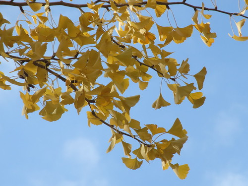
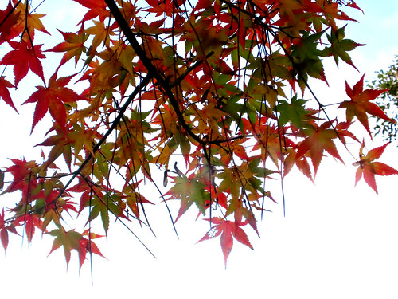
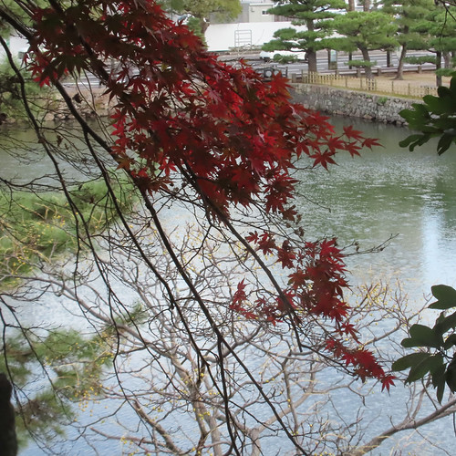
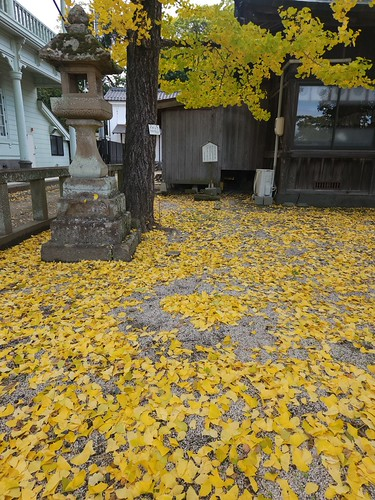

佐太神社の神在祭（お散歩カメラ 2026-11-23）

三連休最後の日の今日は勤労感謝の日。
知ってる方も多いと思うが，勤労感謝の日は新嘗祭（収穫祭）に関連している。
🗓️11月23日（月・祝）🎌 🗒️旧暦10月15日 辛丑かのとうし 国民の祝日・勤労感謝の日。 勤労に対して、みんなが互いに感謝しあうとされる日。元は収穫祝いの側面があるお祭りでした。この日に合わせて新米を食べることもあるとか！ #拝啓暦の上から
— 松浦はこ🗓 暦の擬人化｜1巻発売中 (@mats-box.com) 2026年11月23日 0:01
[image or embed]
新嘗祭と勤労感謝の日
念のために触れておくと，元々の新嘗祭は旧暦十一月の2回目の卯の日に行われていた。 明治時代に入り，明治の改暦（明治6年〜）を機に11月23日に固定された経緯があった。
- 明治12年07月05日 第27号布告 神甞祭を10月17日に改定 (国立国会図書館)
神甞 祭、新嘗 祭はともに収穫祭の意味合いを持つ祭日ですが、前者は伊勢神宮の、後者は天皇家の祭日です。- 神甞祭は、明治6年暦では11月6日＝天保暦で九月十七日となっていますが、明治06年07月20日 第258号布告にて太陽暦の9月17日に改定 (国立国会図書館)、以後 9月17日とされていました。
- 太陰太陽暦の日付と太陽暦の日付には1か月ほどのズレがありますから、月遅れの日取りに変更したわけです。
- 新嘗祭も本来は太陰太陽暦十一月2回目の卯の日ですが、明治6年の該当する日は翌7年1月10日になるため、明治6年暦には記載されていません。
- こちらは明治06年07月20日 第258号布告にて太陽暦11月2回目の卯の日＝明治6年11月23日を採用、以後11月23日に固定されました。
この新嘗祭の祭日が戦後に勤労感謝の日に当てられた。
祝日法の制定前、１１月２３日は祭日の「新嘗祭」として休日とされており、国民の生活の中でも、新穀に感謝する日でした。同法の制定に当たっても、当初、この日を「新穀祭」や「新穀感謝の日」 とする提案もありました。勤労感謝の日は、いにしえからの収穫感謝の風習を生かしつつ、感謝の日として新たに設けられたといえます。
当時の報告書 １では、この日の「感謝」について、「国民が毎日生活を続けていられるのは、お互いがお互いを助け合っているからである。従って、ここにいう感謝というのは、すべての人がすべての生産とすべての働きとに感謝し合うのでなければならない。この感謝の心もちは、今日のような世相のけわしい時には最も必要なものであるが、世の中が落ち着いた時にも常に大切なものである」と説明されています。
佐太神社の神在祭
「そういや，昨年の今頃に佐太神社でお祭りやってたな」と思い出し，行ってみることにした。
おー。 やってるやってる。
佐太神社のこのお祭りは「
一般に陰暦10月を神無月（かんなづき）と云いますが出雲國では神在月（かみありづき）と申します。古来諸説、俗説多くありますが、神在はジンザイと読み、鎮齋（ちんさい）すなわち「忌（いみ）」の意味で新嘗祭（にいなめさい）に関係を持っていると思われます。新嘗には斎戒を厳重に行う風俗があり、新穀を神に献ずる祭を相新嘗（あいにいなめ）といって10月に行っていました。大宝律令が制定されると伊勢神宮だけは尊崇のため祭を繰り上げて9月に行い、その他は繰り下げて11月に行った為10月は祭りが少ない月、すなわち「神無月」となったのです。しかし、出雲國では依然として10月に新穀を献ずる新嘗の祭が行われ、また、風土記に載る意宇（おう）、秋鹿（あいか）、楯縫（たてぬい）、出雲の神名火・神名樋山（かんなびやま）に神々が去来するというカンナビ信仰が結びつき出雲國特有の祭として残ったと考えられています。中世になるとに諸国の神々は出雲國お集まりになるという伝承が生まれ、出雲國では「神在月」と云うようになりました。
[…]
厳重な物忌みの祭であった為、時代が下ると間に中根（なかね）と呼ぶ緩和日を3日間設け、斎戒を解いたのでした。この当時佐陀大社は八百万（やおよろず）の神々の母神である伊弉冉尊の大元の社で、その背後の山に陵墓を祀っていると伝えていました。陰暦十月は伊弉冉尊（いざなみのみこと）が神去りました月であるという卜部（うらべ）家又は陰陽道の説により、八百万の神々は毎年この月になると当社にお集まりになり母神を偲ばれるのだとされ、この祭りを「お忌祭」と呼び、中根を中陰の意味としました。そして明治30年頃より陰暦10月を陽暦11月に改め上忌が無くなり下忌のみを執行することになり現在にいたっています。
あれ？ 「神迎え」って出雲大社の神事じゃないの？
神様を迎えるのは出雲大社だけじゃない
「神在祭」は出雲大社のそれが有名だが，実は出雲大社（杵築神社）だけではなく，出雲各地で行われているようだ。
縁結びなど様々な事柄の縁を結ぶということなどから出雲大社の神在祭が有名ですが、松江市の佐太神社や神魂神社（本殿は国宝です）、熊野大社、出雲市の万九千神社など、現在では10社で神在祭が行われています。
神々が出雲に集うことは12世紀半ばの『奥義抄』にすでに記され、また14世紀の『詞林采葉抄』には、「出雲では10月が神在月と呼ばれ、神在社と呼ばれる佐太神社に神々が集う」と記されています。また、また神社側に伝わる資料を見ると、例えば出雲大社では１４世紀半ば、佐太神社では１５世紀末の資料に「神在祭」に関連する記載が見られます。このように、中世末には多くの神社で神在祭が行われるようになったと考えられます。
このうち神迎え神事を行っている神社として，出雲大社と佐太神社以外では，松江市の熊野大社や出雲市の朝山神社が知られている。
神々が集う出雲の各神社では「神迎祭」に始まり、「神在祭」そして、神々をお見送りする「神等去出祭(からさでさい)」が行われます。ここでは、出雲市内の各神社の神在期間をご紹介します。お祭りは毎年旧暦に合わせて斎行されます。
いや，アレってぶっちゃけ百鬼夜行なのよ。 神と鬼はコインの裏表だからね。 私は子供の頃に親から「神様が渡ってるところを見たら連れ去られる（から早く寝ろ）」と脅されて，しばらく夜中のトイレに行けなかったよ。 いたいけな子供になに言うねん！
まぁ，収穫祭に信仰する神様を迎えるのは普通のことだし，中央に対する出雲の立場1 や神事の変遷なども併せて，いつの間にか「全国の神様が集まる」とか大風呂敷を広げるようになったと邪推&憶測するのだが，どうだろう。
【おまけ】松江城の紅葉
市内に戻って松江城の紅葉を見に行ってきた。




木によってまちまちなのだが，先々週見たときよりだいぶ紅葉が進行している感じ。
本丸から見える大山もきれいだった。
夕方まで県立図書館で読書三昧の後，帰宅。 見上げれば十五夜の月が昇ってた。
ちなみに満月（望）は明日の深夜である。
参考

- Canon コンパクトデジタルカメラ PowerShot ZOOM 写真と動画が撮れる望遠鏡 PSZOOM
- キヤノン (Release 2020-12-10)
- エレクトロニクス
- B08L4WKDZ7 (ASIN), 4549292179675 (EAN)
- 評価
[Comment] 望遠鏡型コンパクトデジカメ。メモリと充電器（要 Power Delivery）は別に用意する必要がある。使い勝手はまぁまぁ。

- 『松江の神社&その旧社地』 - 今井出版の自費出版
- 合祀・廃社されて自然の中に還り忘れ去られつつある旧社地を記録に『出雲国風土記』や『延喜式』に掲載された神社が数多く残る松江。各地域・地区にも氏神様の社や小さな祠などたくさんの神々が祀られています。
- 評価
[Comment] Web サイト「松江の神社」で公開されている写真と解説を本にまとめたものらしい。小さな祠まで網羅されていて，とても助かっている。地元出版社による自費出版。 Amazon で買えるが，在庫切れかな？
Powered by linkcard

- 古代出雲の氏族と社会 (47) (同成社古代史選書 47)
- 武廣 亮平 (著)
- 同成社 2024-03-11
- 単行本
- 4886219454 (ASIN), 9784886219459 (EAN), 4886219454 (ISBN)
- 評価
[Comment] 「島根の歴史文化講座 2024」で講師をされた武廣亮平さんの著作。興味本位で買うには躊躇するお値段だし地元の県立図書館でも借りれるが，じっくり読みたいので買ってみた。著者の過去の論文を再構成した内容。記紀などの史料や過去の研究者の膨大な文献を整理した上で古代出雲についての考察を行う。